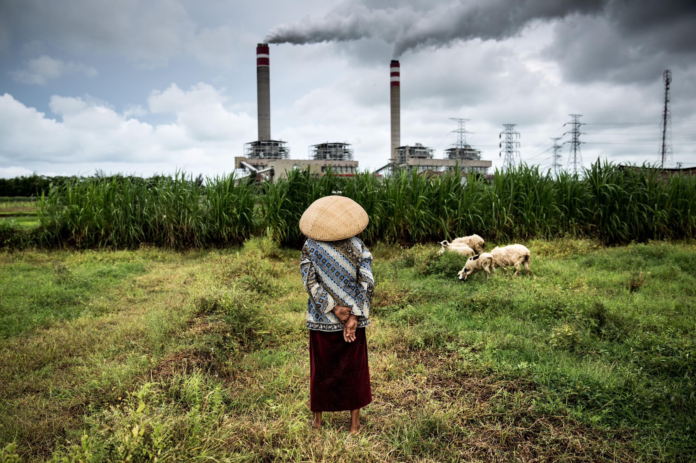

The Effects of Biodiversity Loss on Ecosystems and Human Life
Understanding how the decline of species affects ecological balance, human health, and global sustainability.
Introduction
Biodiversity refers to the variety of living organisms on Earth, including plants, animals, and microorganisms. It plays a vital role in maintaining healthy ecosystems. However, biodiversity loss is rapidly increasing due to human activities such as deforestation, pollution, climate change, and overexploitation of resources.
1. Ecosystem Disruption
Every species has a role in its ecosystem. When species disappear, food chains and natural processes are disturbed. This imbalance can lead to overpopulation or decline of certain species, eventually weakening or collapsing ecosystems.
2. Loss of Ecosystem Services
Ecosystems provide essential services such as clean air, water purification, soil fertility, and pollination. Biodiversity loss reduces the efficiency of these services, which can negatively impact agriculture, food production, and human survival.
3. Increased Risk of Extinction
As biodiversity decreases, more species become vulnerable to extinction. Smaller populations have less genetic diversity, making it harder for them to adapt to environmental changes, diseases, and natural disasters.
4. Economic Impacts
Many industries depend on biodiversity, including agriculture, fisheries, and tourism. The loss of species and ecosystems can reduce productivity and cause financial losses, especially in communities that rely on natural resources.
5. Threats to Human Health
Biodiversity loss can increase the spread of diseases. When ecosystems are disrupted, disease-carrying organisms may thrive, increasing the risk of infections in humans and animals.
Conclusion
Biodiversity loss is a serious global issue that affects ecosystems, economies, and human health. Protecting biodiversity is essential to maintain environmental balance and ensure a sustainable future for all living organisms.